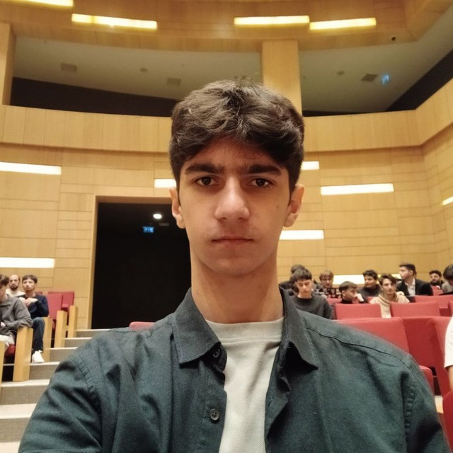

Page + DOM Scan
Scans content, forms, actions and current UI state before making a move.
AI Agent for Browser Automation
A browser-native AI agent that reads full page context, understands DOM and console signals, and completes actions step-by-step until outcome.
Automation loops
Context depth
Domains
Core system
Scans content, forms, actions and current UI state before making a move.
Reads errors and warnings to avoid repeating broken steps.
Auto-retries with alternative selectors and recovery actions.
If user specifies a site, the agent remains on that domain.
Use cases
SuperWizard filters noise, picks useful sources and returns actionable output.
Compares options across the internet and opens relevant product pages.
Forms, onboarding, repetitive browser tasks — done with retries and checks.
Demos
Research & news: SuperWizard collects and works through live web sources to deliver a concise brief.
Tests & quizzes: the agent builds an interactive check you can run and export right in the browser.
Multi-step flows: the agent fills in what's missing and drives the task to completion.
Founder

My name is Marat Safiyev. I am Lezgin, a full-stack developer and founder based in Azerbaijan, with deep expertise in Artificial Intelligence, Web3, and Game Development. At 16, I have already led cross-functional teams and successfully delivered a series of technically complex projects from concept to launch.
Hackathons: Participant in 12+ international competitions, including high-profile events like the Google Gemini and Cursor Hackathons.
Behind the product
The project was born during the January Gemini Hackathon when we ran out of time to edit our pitch video due to manual, routine tasks.
This struggle sparked the idea for a Gemini-powered browser extension designed to automate the boring stuff and save people's time.
Currently, it is an open-source product that I am building and refining independently. I am using this stage to test various hypotheses and features to see what works best for users.
While it's not an official company yet, the long-term plan is to monetize the platform as it evolves.
SuperWizard
A founder-controlled platform: own your logic, quality, roadmap and iteration speed.
Powered by AI Lumiere.
Automated flows
Sources analyzed
Avg. setup time (sec)